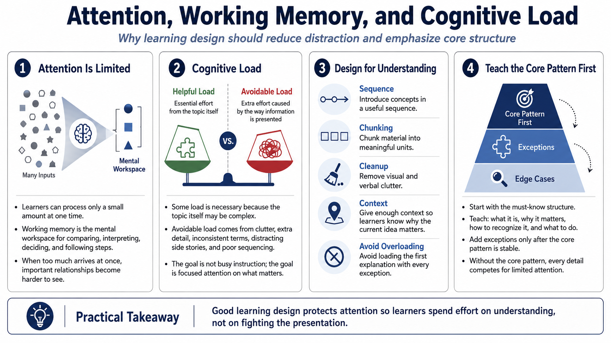

Attention and Cognitive Load
Connecting to LMS... Progress: in progress

Narration
Attention is limited. Learners can only select and process a small amount of information at one time, especially when the material is new. Working memory is the mental workspace where people hold information while they compare, interpret, calculate, decide, or follow a procedure. When too much arrives at once, the learner may still be trying hard, but the mental workspace becomes crowded and the important relationship is harder to see.
Cognitive load is the mental effort required to hold, process, and use information. Some load is necessary because the topic itself may be complex. Other load is avoidable. Unnecessary detail, cluttered visuals, inconsistent terminology, distracting side stories, and poorly sequenced explanations all consume attention without helping the learner build capability. The issue is not whether a course feels busy. The issue is whether the learner can focus on the decision, pattern, or action that matters.
Good learning design manages load deliberately. It introduces concepts in a useful sequence, chunks material into meaningful units, removes visual and verbal clutter, and gives learners enough context to understand why the current idea matters. It also avoids dumping every exception into the first explanation. The aim is not to make learning shallow. The aim is to make the important structure visible so learners spend their effort on understanding instead of fighting the presentation.
One practical move is to separate must-know structure from nice-to-know detail. Learners need the core pattern first: what it is, why it matters, how to recognize it, and what to do with it. Once that pattern is stable, exceptions and edge cases become easier to place. Without the core pattern, every detail competes for the same limited attention.